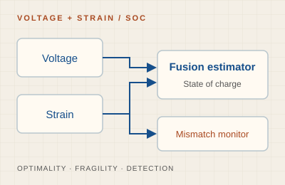
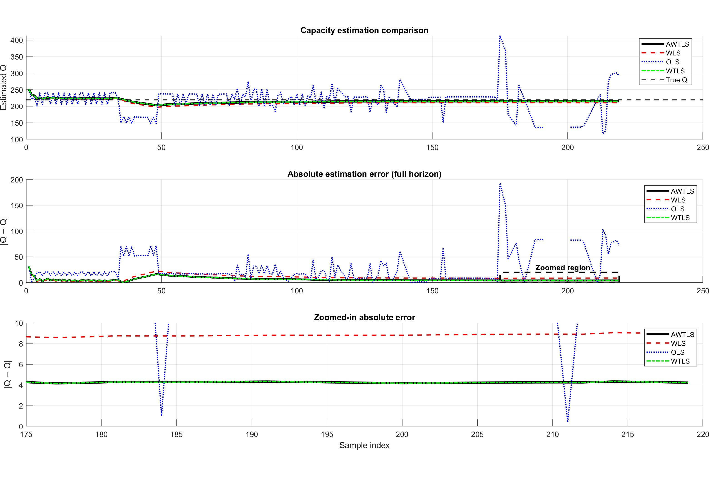

Novel Reduced-Order Non-Linear Filter with Sensor Failures
Ongoing project
A novel reduced-order non-linear filter for intermittent sensor measurement, developed for non-linear system state estimation.
Project Manager at HGTech. PhD in Electrical & Computer Engineering from Marquette University, advised by Dr. Edwin Yaz in the MACE Group.

I develop state-estimation methods for batteries and electromechanical systems, with an emphasis on measurement uncertainty, model mismatch, and computational efficiency.
Online state-of-health estimation for lithium-ion cells under measurement uncertainty and biased state-of-charge measurements.
Voltage–strain fusion for state-of-charge estimation, including its information gain, sensitivity to model mismatch, and mismatch detection.
Computationally efficient nonlinear filters for motor speed and position estimation in the presence of model uncertainty.
My research bridges deep learning–based computer vision (video analysis, multi-object tracking) and distributed estimation theory (SOC/SOH estimation, Kalman filter variants, multi-target tracking in sensor networks).


Proceedings link forthcoming.
A simulation study of voltage–strain fusion for lithium-ion cell state-of-charge estimation, with particular attention to the flat voltage plateau of LFP cells. The work characterizes the information gain and optimality of fusion under correctly specified models, examines its sensitivity to strain-model mismatch, and evaluates a monitored parallel estimator that detects mismatch while preserving a voltage-only fallback.

Proceedings link forthcoming.
A robust SOH estimation pipeline for lithium-ion cells that remains reliable under biased SOC measurements, combining extended Kalman filtering with RTS smoothing for improved accuracy under real-world measurement imperfections.
A novel approximate weighted total least squares (AWTLS) algorithm for online state-of-health (SOH) estimation of Lithium-ion cells. By reformulating the weighted total least squares problem in a recursive form, AWTLS greatly reduces computation while explicitly accounting for uncertainty in both SOC and current measurements. On real road-charging data it outperforms OLS and WLS and matches WTLS accuracy, making it well suited for online battery-management-system implementation.

A novel nonlinear reduced-order H∞ filter is introduced to estimate the speed and position of a two-phase PMSM with biased winding resistance, addressing modeling inaccuracies, temperature variations, and aging effects. Simulation results show robust estimation compared to both full- and reduced-order EKFs under model uncertainty.

A novel Reduced-order Extended Kalman Filter (ROEKF) for PMSM speed and position estimation that achieves equivalent accuracy to the full-order EKF while significantly reducing computation cost.
Two efficient techniques for multi-object tracking: a realistic motion model improving tracking with no extra cost, and a reduced-order Kalman filter cutting computation while maintaining tracking accuracy. Competitive results on MOT benchmarks.

A discrete-time reduced-order H∞ filter offering a compelling alternative to the full-order version with significantly reduced computation cost and similar estimation accuracy under biased process noise.

3D CNN applied to violence detection in surveillance footage. A comprehensive hyperparameter study shows competitive results on three benchmark datasets, outperforming techniques designed specifically for violence detection.

MMAE technique for simultaneous SOC and total capacity estimation of LiFePO4 cells. Conditional probabilities over capacity values drive the state estimate, outperforming Joint and Dual estimation baselines.

MMAE + EKF combination for SOC estimation of LiFePO4 cells. The combined technique improves accuracy and avoids the individual drawbacks of MMAE or EKF alone.

Converts nonlinear SOC estimation into a parallel linear problem using MMAE with a bank of Kalman filters. Outperforms EKF alone on LiFePO4 simulation.

Bank of Kalman filters detects sensor and actuator intrusions in CPS without knowledge of the intrusion type. Validated on a DC motor speed control simulation.

Fading memory technique applied to the MME algorithm enables significantly faster detection of CPS sensor and actuator intrusion signals. Verified on a DC motor simulation.

HELLO, WORLD
Thanks for stopping by. Explore where visitors to this site are reading from.
View visitor statistics ↗Map and page views provided by MapMyVisitors. If the map is unavailable, the statistics page remains accessible via the link above.